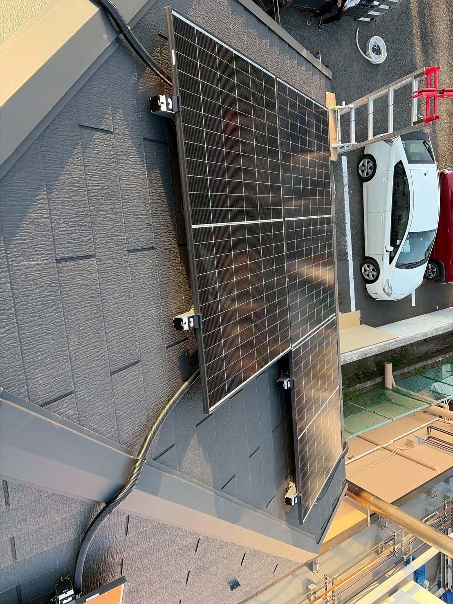
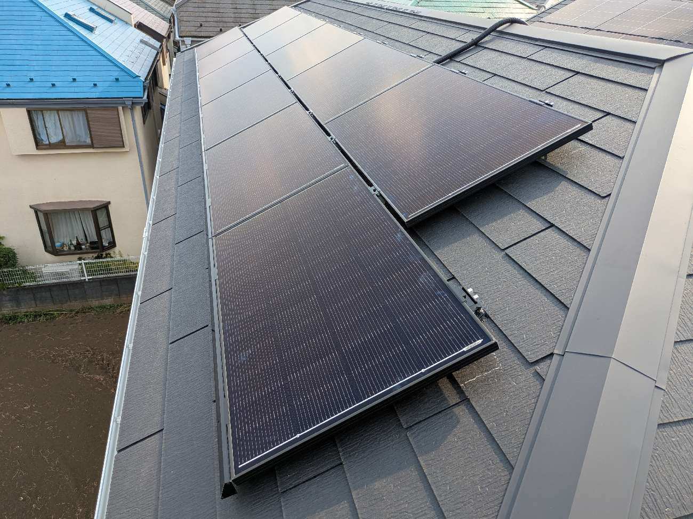
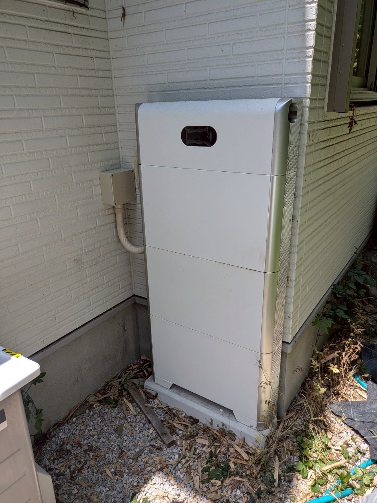

八王子市
太陽光＋蓄電池（カナディアン・ソーラー）
入替前後の内訳は、事例データ確定後に追記します／写真は実写
蓄電池・太陽光の入替診断
2012年ごろの初期モデルは容量4〜10kWh、本体寿命は約10年。
現在の機種は最大20kWh、メーカー保証20年。2台併設も可能です。
これから設置をお考えの方はこちら（設置診断）
蓄電池もパワコンも消耗品です。壊れてから動くと、補助金の申請タイミングを逃すことがあります。
蓄電池が家庭用に普及し始めたのは2012年ごろ。今まさに、その入替時期を迎える世帯が増えています。
| 項目 | 初期モデル（2012年前後） | 現行モデル |
|---|---|---|
| 容量 | 平均4kWh〜10kWh | 最大20kWh（単体） |
| 併設 | 不可が中心 | 2台併設可能 |
| 本体寿命 | 約10年 | 20〜25年 |
| メーカー保証 | 10年前後 | 20年 |
| 強み | 当時水準 | 大幅に向上 |
現行モデルは容量が倍以上、メーカー保証も20年と大きく進化しました。東京都にお住まいの場合、2台併設なら補助金も2台分が対象になり得ます（条件によります。断定ではありません）。 入替先のメーカーは1社に決めていません。次の「おすすめするトップ3」を中心に、ご家庭の電気の使い方やご予算に合わせて中立にご提案します。
1社だけを勧めることはしません。屋根の形・ご家族の電気の使い方・ご予算に合わせて、国内外のメーカーから中立にご提案します。
このほかのメーカーもご相談いただけます。
東京都の助成金を使って設置した蓄電池には、「処分制限期間」があります。
| 設置からの経過 | 入替時の扱い |
|---|---|
| 6年以上経過 | 手続き不要。令和8年度の東京都補助金の申請が可能になります |
| 6年未満 | 残存価額に応じた返還金が必要になる場合があります |
2012年前後に設置された蓄電池は、すでに6年を大きく超えています。処分制限期間を経過しているため、入替にあたって制度上の制約がなくなり、新たに令和8年度の東京都補助金を申請できる状態です。 「満額もらえる」とはお約束できません。金額は容量・時期・予算の残りによります。
お名前・電話番号は不要です。設置時期が分からなくても大丈夫です。
現在は東京都内のご相談を受けております。神奈川・埼玉は、将来広げる予定です。
正確な補助金額と、お使いの機種からの入替先の候補（トップ3を含む取扱メーカーから中立に比較）をLINEでお届けします。
当日〜翌日にご返信します（20時頃までのお問い合わせは、当日中にご返信できることがほとんどです）。営業電話はいたしません。
LINEをお使いでない方：フォームで受け取る ／ お電話 042-652-9777（9:00〜18:00、土日祝も受付）
公開中の事例のみ。施工金額は非公開です。入替前後の内訳は、ご提供後に差し替えます。

八王子市
太陽光＋蓄電池（カナディアン・ソーラー）
入替前後の内訳は、事例データ確定後に追記します／写真は実写

小平市
太陽光＋蓄電池（ネクストエナジー）
入替前後の内訳は、事例データ確定後に追記します／写真は実写

青梅市
蓄電池（DMM.com）
入替前後の内訳は、事例データ確定後に追記します／写真は実写
費用や補助金額など、詳しくはお気軽にお問い合わせください。ここに掲載しきれない過去の事例もございます。写真は公式HPの公開事例です。
トップ3の製品写真はカタログ許諾前のためフリー素材のイメージです。施工写真：自社HP施工事例より
「古い蓄電池はどうなるの？」という不安もご安心ください。既存設備の撤去・処分まで含めて対応します。工事はほぼ1日で完了します。他社で設置された設備でも問題ありません。
設置から20年が近い太陽光発電は、パワコンの寿命を迎えています。FITの買取期間が終わった今、「売る」から「貯めて使う」へ切り替えるタイミングです。パワコン交換とあわせて蓄電池を追加すると、昼につくった電気を夜に使えるようになります。
パネルごと入れ替える場合も、蓄電池を追加する場合も、上の「おすすめするトップ3」を含む取扱メーカーから、屋根の形や電気の使い方に合わせてご提案します。
設置時期を入れるだけ
当日〜翌日（20時頃まではほとんど当日中）
ここで終了されても構いません。無理な買い替えはおすすめしません。
提携施工会社と当社が同行
8社からご家庭に合う1台をご提案
当社がすべて代行
提携施工会社／ほぼ1日。撤去も含む
診断後に営業電話はしません。ご連絡はLINE（またはお客様が選んだ連絡方法）で行い、訪問はご希望の場合のみです。
できます。
できます。取扱8社から最適を選定します。
1社には決めていません。太陽光・蓄電池それぞれのトップ3を含む取扱メーカーから、電気の使い方やご予算に合わせて中立にご提案します。
撤去・処分まで対応します。
設置時期と症状から、診断で目安をお伝えします。
設置から6年経過で申請が可能になることが多いです。金額は容量・時期・予算残によります。「満額」はお約束しません。
すべて当社が代行します。国（DR家庭用蓄電池事業）・東京都・市区町村のどの制度も対応します。
設置時期を入れるだけ。無理な買い替えはおすすめしません。
今のままで良ければ、そのままで構いません。
これから太陽光・蓄電池を付ける方は設置診断へ
お電話：042-652-9777（9:00〜18:00、土日祝も受付）
本番接続前のUI確認用です。送信はしません。